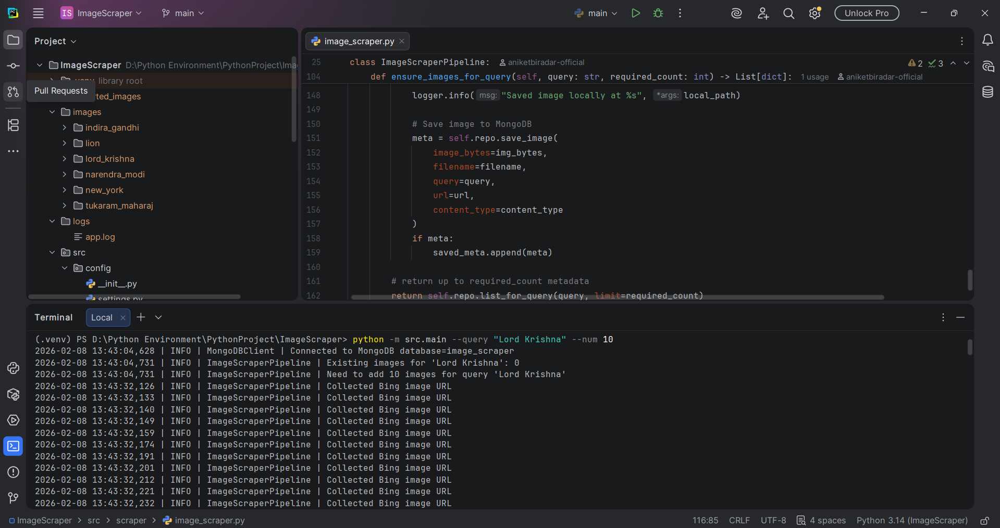
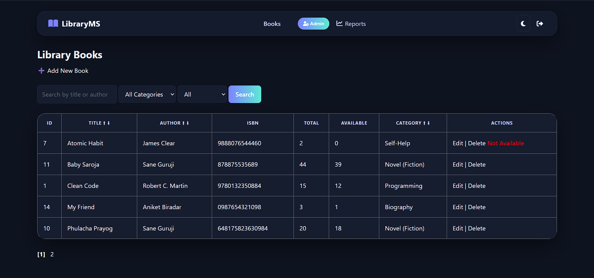
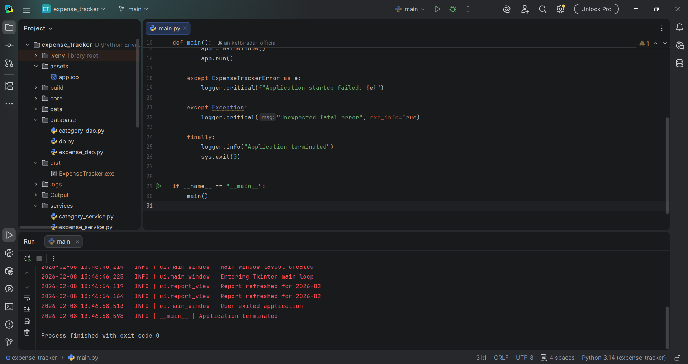

Image Scraper & Dataset Generator
Automated image collection system for dynamic websites with pagination handling, retries, and deduplication.
Python · Java · Databases · Automation · System Design
I design and implement production-oriented web applications and desktop applications with clean architecture, scalability, and reliability in mind.
I focus on how systems behave in the real world — not just how they look.
I am a B.Sc. Computer Science student with a strong inclination toward full-stack development and system design. I enjoy working close to data, infrastructure, and execution flow — where correctness, performance, and maintainability matter.
My projects reflect real-world constraints: dynamic data sources, transactional workflows, offline reliability, and structured storage. I deliberately design systems using clean architecture, MVC patterns, and well-defined responsibilities instead of tightly coupled logic.
I am actively preparing for full-stack development roles and internships, with a long-term goal of building scalable, production-grade software systems.
Python, Java, databases, APIs, automation, and system workflows — UI is an extension to correctness.
MVC, separation of concerns, reusable modules, and maintainable codebases.
Error handling, logging, retries, validation, and data integrity are first-class concerns.
Education, focus areas, and academic milestones.
COCSIT, Latur
Current CGPA: 9.55 / 10.0
Python, Java, databases, automation pipelines, MVC architecture, and system-level thinking.
Presented a technical poster explaining problem statement, methodology, and implementation approach to faculty and peer reviewers.
My core technical stack and development toolkit.
Production-oriented systems, not tutorial-level demos.

Automated image collection system for dynamic websites with pagination handling, retries, and deduplication.

Full-stack Java MVC application with role-based access, transactional workflows, and reporting.

Offline-first desktop application for expense tracking, budgeting, and analytical reports.
Let’s connect and talk about full-stack project experience, not buzzwords.
I am actively seeking Full-Stack internships. If you are looking for a developer focused on clean architecture and system reliability, let's connect.
B.Sc. Computer Science (Semester 4)
Full-Stack Developer
Open to internships, part-time roles, and collaborative projects